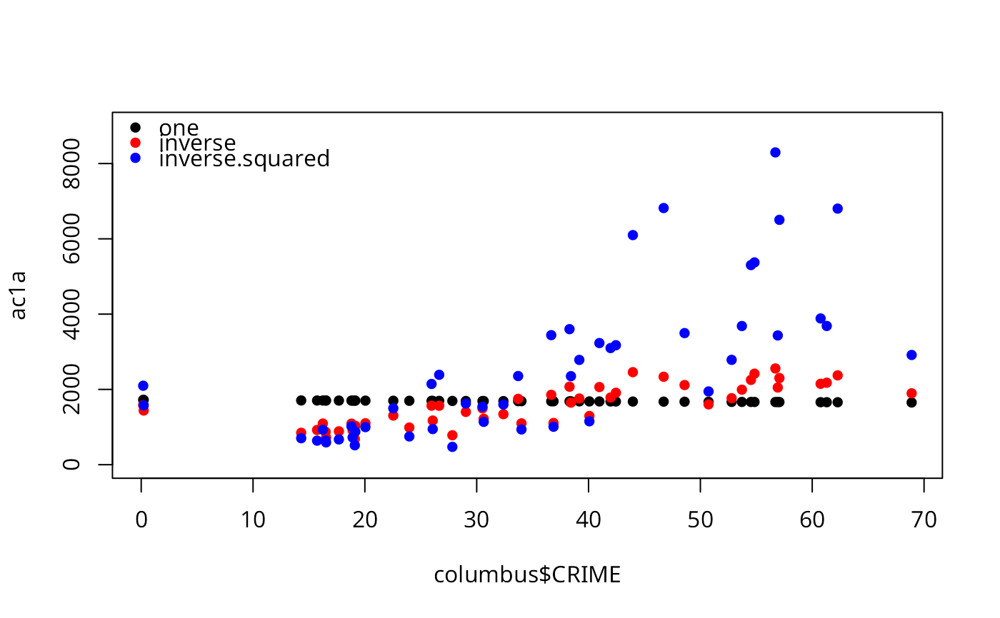

Distance-weighted autocovariate
autocov_dist.RdCalculates the autocovariate to be used in autonormal, autopoisson or autologistic regression. Three distance-weighting schemes are available.
Arguments
- z
the response variable
- xy
a matrix of coordinates or a SpatialPoints,
sforsfcpoints object- nbs
neighbourhood radius; default is 1
- type
the weighting scheme: "one" gives equal weight to all data points in the neighbourhood; "inverse" (the default) weights by inverse distance; "inverse.squared" weights by the square of "inverse"
- zero.policy
default NULL, use global option value; if FALSE stop with error for any empty neighbour sets, if TRUE permit the weights list to be formed with zero-length weights vectors
- style
default “B” (changed from “W” 2015-01-27); style can take values “W”, “B”, “C”, “U”, and “S”
- longlat
TRUE if point coordinates are longitude-latitude decimal, in which case distances are measured in kilometers; if xy is a SpatialPoints object, the value is taken from the object itself
Note
The validity of this approach strongly hinges on the correct choice of the neighbourhood scheme! Using style="B" ensures symmetry of the neighbourhood matrix (i.e. \(w_{nm} = w_{mn}\)). Please see Bardos et al. (2015) for details.
References
Augustin N.H., Mugglestone M.A. and Buckland S.T. (1996) An autologistic model for the spatial distribution of wildlife. Journal of Applied Ecology, 33, 339-347; Gumpertz M.L., Graham J.M. and Ristaino J.B. (1997) Autologistic model of spatial pattern of Phytophthora epidemic in bell pepper: effects of soil variables on disease presence. Journal of Agricultural, Biological and Environmental Statistics, 2, 131-156; Bardos, D.C., Guillera-Arroita, G. and Wintle, B.A. (2015) Valid auto-models for spatially autocorrelated occupancy and abundance data. arXiv, 1501.06529.
Examples
columbus <- st_read(system.file("shapes/columbus.gpkg", package="spData")[1], quiet=TRUE)
#xy <- cbind(columbus$X, columbus$Y)
xy <- st_coordinates(st_centroid(st_geometry(columbus),
of_largest_polygon=TRUE))
ac1a <- autocov_dist(columbus$CRIME, xy, nbs=10, style="B",
type="one")
acinva <- autocov_dist(columbus$CRIME, xy, nbs=10, style="B",
type="inverse")
acinv2a <- autocov_dist(columbus$CRIME, xy, nbs=10, style="B",
type="inverse.squared")
plot(ac1a ~ columbus$CRIME, pch=16, ylim=c(0,9000))
points(acinva ~ columbus$CRIME, pch=16, col="red")
points(acinv2a ~ columbus$CRIME, pch=16, col="blue")
legend("topleft", legend=c("one", "inverse", "inverse.squared"),
col=c("black", "red", "blue"), bty="n", pch=16)

nb <- dnearneigh(xy, 0, 10)
lw <- nb2listw(nb, style="B")
ac1b <- lag(lw, columbus$CRIME)
all.equal(ac1b, ac1a)
#> [1] TRUE
nbd <- nbdists(nb, xy)
gl <- lapply(nbd, function(x) 1/x)
lw <- nb2listw(nb, glist=gl, style="B")
acinvb <- lag(lw, columbus$CRIME)
all.equal(acinvb, acinva)
#> [1] TRUE
gl2 <- lapply(nbd, function(x) 1/(x^2))
lw <- nb2listw(nb, glist=gl2, style="B")
acinv2b <- lag(lw, columbus$CRIME)
all.equal(acinv2b, acinv2a)
#> [1] TRUE
#xy <- SpatialPoints(xy)
#acinva <- autocov_dist(columbus$CRIME, xy, nbs=10, style="W",
# type="inverse")
#nb <- dnearneigh(xy, 0, 10)
#nbd <- nbdists(nb, xy)
#gl <- lapply(nbd, function(x) 1/x)
#lw <- nb2listw(nb, glist=gl)
#acinvb <- lag(lw, columbus$CRIME)
#all.equal(acinvb, acinva)
acinvc <- autocov_dist(columbus$CRIME, st_centroid(st_geometry(columbus),
of_largest_polygon=TRUE), nbs=10, style="W", type="inverse")
all.equal(acinvc, acinva)
#> [1] "Mean relative difference: 40.63575"